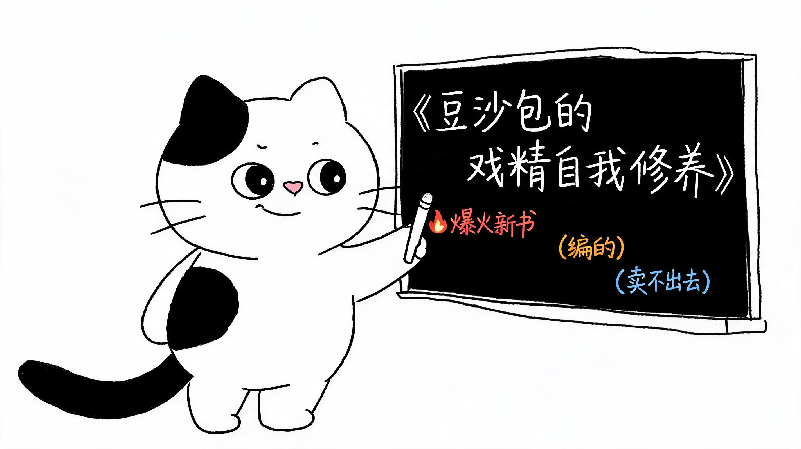

智国学堂 TeachZero · CCF 大模型能力认证（LMCC）课程
会用 AI（应用体验篇）第 01 课
让 AI 替你干活，而不是被它牵着走。这是眼下最实用的本事。
CCF 大模型能力认证，中国计算机学会发的，考过了对升学有用。
两件事一前一后。先学会用，学扎实了，后面考证就顺。
| 项目 | 说明 |
|---|---|
| 全称 | CCF 大模型能力认证（Large Model Competence Certification） |
| 谁办的 | 中国计算机学会（CCF），就是办 NOI、CSP 的那家 |
| 考什么 | 12 个模块，从"什么是 AI"到大模型原理、提示工程、智能体、伦理安全 |
| 怎么考 | 上机实操为主，考的是"会不会用"，不是"背没背会" |
| 有什么用 | 证书能写进综合素质评价，升学、评优都用得上；往上还能接 NOAI 人工智能奥赛 |
这门课就是照着 LMCC 的要求来排的。你会一路从"会用"走到"懂原理"，再到"自己造东西"，最后"想清楚 AI 跟人该怎么相处"。学完，考证和竞赛都有了底子。
第一件事做完，先别下结论。答案在第五件。
卡住了举手：装不上、登不上、找不到按钮，都举手。这五分钟就是专门用来解决这些的。
接下来每一轮任务都这样操作：左边点新建任务 → 中间输入框写要求 → 回车发送 → 右边看它干活 → 结果存到「产物」里。后面就不重复讲了。
编一个根本不存在的东西的名字。
一本书、一个地方、一种动物、一道菜，都行。要编得像真的。
在 WorkBuddy 里发这段话：
请介绍一下《月亮上的图书馆》这本书：作者是谁、哪年出版、 主要讲了什么。200 字以内。
把书名换成你们自己编的那个。发出去，看它怎么答。等它说完，把回答抄几句下来。

新开一个任务，发这段话：
搜索一下，2026 年普通人手机上常用的 AI 功能有哪些。 按用途分类，做成一张表，三列：功能名、它替人做了什么事、你多久用一次。 不要开场白，直接给表。
看右边：它会自己去网上搜，边搜边干。做完，结果会存到「产物」里。
它查到的哪一条，你以前不知道那是 AI？
它给你的那张表只列了手机上的。其实 AI 能干的事，比表上多得多。下面这份是全景。
| 类别 | 能干什么 | 举个例子 | 第几课 |
|---|---|---|---|
| 文字 | 写文章、写诗、写剧本、改写、润色 | 写一篇班级活动报道 | 04 |
| 对话 | 问答、讲解、当老师、当陪练 | 讲清"什么是分数"，再出题考我 | 05 |
| 图画 | 按描述生成图片、海报、插画 | 画一张班级运动会海报 | 06 |
| 办公 | 做 PPT、排文档、整理表格 | 把这份笔记做成汇报 PPT | 07 |
| 翻译 | 中英日韩互译、改写地道表达 | 把这封信翻成英文 | 08 |
| 摘要 | 长文变要点、读书笔记 | 把三千字的文章压成五条 | 09 |
| 数据 | 表格问答、找规律、出图表 | 这份成绩单，哪科拖后腿 | 10 |
| 编程 | 写代码、改 Bug、解释代码 | 写一个猜数字小游戏 | 今天 |
| 语音 | 听写、配音、语音转文字 | 把课堂录音变成文字稿 | 13 |
| 视频 | 生成短视频、配音、数字人 | 做一段十秒的片头 | 13 |
| 推理 | 解数学题、逻辑分析、分步骤想 | 鸡兔同笼，写程序解 | 今天 |
| 看图 | 识别图片内容、读图表、认字 | 这张照片里有什么 | 13 |
| 搜索 | 上网查资料、整理成表 | 刚才那张表就是这么来的 | 今天 |
| 智能体 | 自己规划、调工具、连着干几件事 | 让它查资料再做成海报 | 今天 |
十四类，今天你只碰了四类：搜索、图画、编程、智能体。剩下的，往后的课一件一件来。
记一件事：AI 不是只会聊天。它能写字、能画图、能算数、能写代码、能自己上网查。凡是"坐在电脑前反复做的活"，它多半都能插一手。
注意你刚才做的事：你没有自己去搜，是让 AI 去搜的。这就是让它替你干活。
但它搜回来的东西，你就全信了吗？先记着这个问题。
不要新建任务，就在刚才这个对话里接着发：
把刚才那张表做成一张海报，用 HTML 写，要求： 一、A4 竖版，打印出来能贴墙上 二、标题写"AI 就在身边"，下面一行小字"智国学堂 · 第一课" 三、每条功能配一个 emoji 图标 四、配色清爽，字要大，教室后排也能看清 五、生成一个 .html 文件，存到桌面
做完去「产物」里找到这个 .html 文件，双击用浏览器打开，就能看到海报。
海报出来以后，挑一处不满意的地方，再发给它。比如：
改一次，看一次。这就是"指挥"。
海报是给人看的。这个更带劲：让它写个能玩的游戏。
新开一个任务，发这段话：
写一个猜数字的小游戏，用 HTML 写在一个文件里。 规则：电脑想一个 1 到 100 的数，我来猜，猜大了猜小了都告诉我， 猜中显示我猜了几次。要有输入框和按钮，界面大一点，配色好看。 存成 .html 文件放桌面。
做完去「产物」或桌面找到它，双击用浏览器打开，当场玩一局。看谁猜中的次数最少。
玩两局，挑一处改。比如：
你只管说想要什么，改代码是它的事。
你刚才做的事，叫"提需求"。你没写一行代码，游戏就跑起来了。
但你有没有发现一件事：你没法一眼看出它写的代码对不对。现在游戏能跑，是因为简单。往后要它写复杂的东西，你就得能看懂、能挑错——这就是这门课要练的。
现在，把第一件事那张纸拿出来。
现在去网上搜一下那个书名，看看搜得到什么。
记一行：我核的是 ；对的 条，存疑 条。
新开一个任务，问它两件事：
我上个月借给同桌的那本书，书名叫什么？
看它答什么。是老实说不知道，还是编一个书名给你？
《西游记》的作者是谁？他哪一年出生？
第一问它多半答对。第二问给的年份，自己去搜一遍，看对不对。
三件事做完，你手里有了三条证据。今天有三句话要记住，往后每节课都用：
既然它会编，那怎么让它少编？
新开一个任务，照这个填：
帮我做一张海报（做什么）。 我们班刚学完 AI 这一课，想把"AI 能替人做什么"讲给家长听（有什么）。 要求：A4 竖版，标题"AI 能替我们做什么"，列 5 件事，每件事一句话讲清， 配 emoji 图标，配色清爽，字要大。做成一个 .html 文件存到桌面（怎么样）。 另外：凡是你不能确定的，标上"待核实"，不要猜（这一条最重要）。
最后那一句是关键。发出去，看它这一版有没有标"待核实"。
五件事做完，你其实练了五个动作：
这五个动作，就是这门课要一直练的本事。会用 AI，是说"我能让它出东西"；驾驭 AI，是说"我能对它出的东西负责"。我们要练的是后者。
打开你第六件事做的海报，投到大屏上，说三句话：
前面几件事，你用的都是别人做的 AI。这个学期，我们要做一个自己的。
print() 把一段话显示到屏幕上。变量 把数据存进一个"盒子"，随时取用。
# 第一个程序：AI 打招呼
name = "小智" # 变量：给 AI 起名
print("大家好，我是" + name + "！") # 让它说话
运行后屏幕显示：大家好，我是小智！
my_ai.pyname 换成你给 AI 起的名字它现在只会打招呼，还不会编。往后的课，我们让它越来越聪明，最后一课给它接上一个小模型，让它真正听懂你说话。
那时候你就要更小心了——越聪明的 AI，编得越像真的。
回家做一件事，二选一：
带回来，下节课开一场"我的 AI 首秀"。
下一课讲怎么把需求说清楚。今天你已经尝到了：说得清楚和说不清楚，它给的东西差得很远。
今天你站在算法之巅，那只是有限变量的精确推演；前面是大模型之海。从 NOI 到 LMCC，我们正要走进这片海。